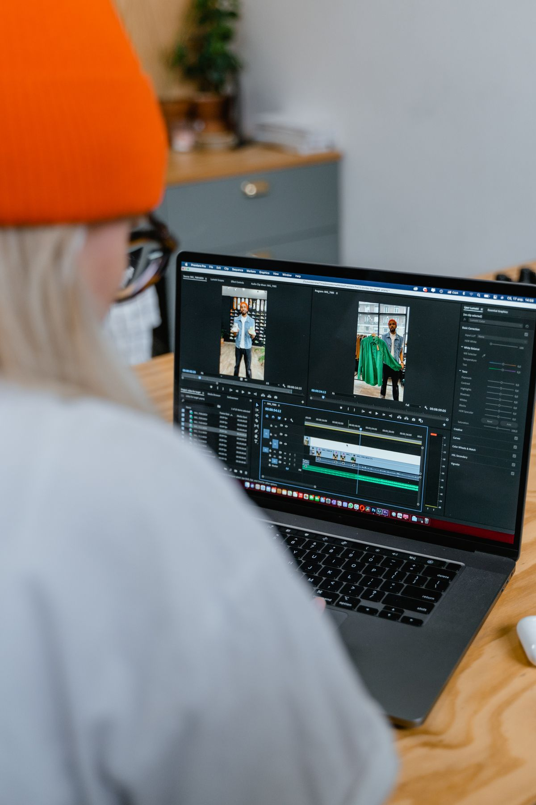
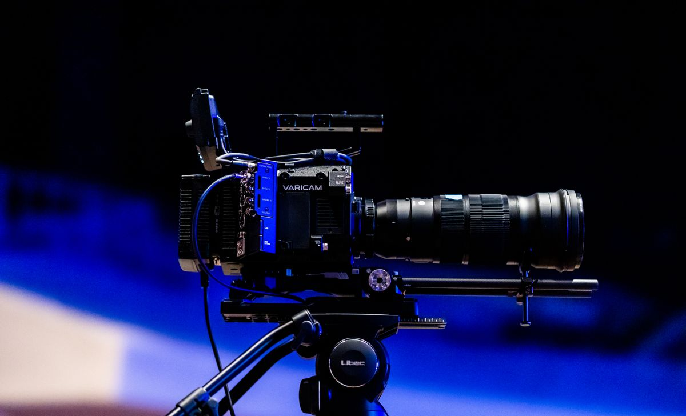

CapCut memang enak dipakai. Buka HP, potong klip, tempel musik, jadi. Masalahnya mulai terasa begitu kamu makin sering mengedit: makin banyak template dan efek yang berlabel Pro, dan kalau tidak sengaja memakai aset Pro, hasil akhirnya bisa ikut bermasalah. Buat video iseng tidak apa-apa, tapi buat konten yang rutin diunggah, rasanya sayang kalau selalu mentok di fitur berbayar.
Kabar baiknya, kamu tidak harus pindah ke aplikasi berbayar. Ada beberapa editor video gratis yang hasil ekspornya bersih tanpa watermark, dari yang simpel buat HP sampai yang serius buat laptop. Lima ini yang paling layak dicoba per Oktober 2026.
1. VN, pengganti paling mirip buat HP
Kalau kamu mengedit di HP dan mau yang rasanya paling mirip CapCut, VN jawabannya. Aplikasi ini tersedia gratis di iOS, Android, dan Mac, dan di halaman resminya di App Store dan Google Play tertulis jelas: gratis tanpa watermark. Timeline-nya multi-track, jadi kamu bisa menumpuk video, teks, dan stiker seperti di editor beneran, bukan sekadar potong dan tempel.
Fitur yang bikin VN terasa lengkap antara lain auto caption yang membuat subtitle otomatis dari suara, keyframe buat animasi teks dan gambar, speed curve buat efek slow motion yang halus, dan filter sinematik plus dukungan file LUT. Buat video TikTok, Reels, atau Shorts, semua itu sudah lebih dari cukup.
Satu batasnya: VN tidak punya versi Windows. Kalau kamu pengguna Windows dan mau memakai VN, jalannya cuma lewat emulator Android, dan itu tidak sepraktis aplikasi asli. Buat pengguna HP dan Mac, VN adalah pengganti CapCut yang paling mulus.
2. Clipchamp, editor browser bawaan Windows
Buat yang mengedit di laptop Windows, Clipchamp adalah jalan paling gampang. Ini editor video dari Microsoft yang sudah terpasang di Windows 11, dan bisa juga dibuka lewat browser. Paket gratisnya mengizinkan ekspor tanpa batas jumlah video, tanpa watermark, dengan resolusi sampai 1080p. Keterangan ini tertulis di halaman dukungan resmi Microsoft dan halaman harga Clipchamp per Oktober 2026.
Yang bikin Clipchamp nyaman buat pemula adalah template siap pakai, perekam layar dan webcam bawaan, serta auto caption dalam lebih dari 80 bahasa. Jadi kalau kamu bikin video tutorial atau presentasi, kamu bisa merekam layar dan menambahkan subtitle tanpa aplikasi lain.

Batasnya ada dua. Pertama, resolusi gratis mentok di 1080p. Kalau mau 4K, harus naik ke paket Premium yang didapat lewat langganan Microsoft 365. Kedua, sebagian stok video, musik, dan efek di dalamnya berlabel premium, dan kalau kamu memakainya, ekspor akan diblokir sampai kamu upgrade. Solusinya gampang: pakai saja aset yang berlabel gratis.
3. DaVinci Resolve, yang paling bertenaga buat laptop
Kalau kamu serius mau belajar edit video dan tidak keberatan belajar agak lama, DaVinci Resolve adalah yang paling bertenaga di daftar ini. Versi gratisnya benar-benar gratis: tanpa watermark, tanpa batas waktu, dan bisa ekspor sampai resolusi 4K UHD. Versi berbayarnya, DaVinci Resolve Studio, dijual 295 dolar sekali bayar, bukan langganan bulanan.
Di dalam satu aplikasi ini kamu mendapat editor video, alat color grading kelas profesional, Fusion buat efek visual, dan Fairlight buat olah audio. Itu sebabnya banyak YouTuber dan filmmaker indie memakai Resolve sebagai editor utama mereka, padahal tidak keluar uang sepeser pun.
Kekurangannya jelas: tampilannya penuh tombol dan butuh waktu buat dipelajari, dan laptop kentang bisa keteteran saat preview. Ada satu jebakan yang perlu kamu tahu: kalau di versi gratis kamu memakai efek yang berlabel Studio, hasil ekspornya akan diberi watermark. Jadi selama memakai efek standar, hasilmu tetap bersih. Unduh dari situs resmi Blackmagic Design, dan siapkan waktu buat menonton tutorial dasarnya dulu.
4. Shotcut, open source yang tidak akan pernah berbayar
Shotcut adalah pilihan buat kamu yang suka hal-hal open source. Aplikasi ini gratis dan kode sumbernya terbuka, jadi tidak akan tiba-tiba berubah jadi berbayar atau menempelkan watermark di hasil ekspor. Tersedia buat Windows, Mac, dan Linux, dan bisa membuka banyak format video tanpa perlu konversi dulu.
Fiturnya cukup lengkap buat kebutuhan sehari-hari: timeline multi-track, filter video dan audio, transisi, sampai dukungan video 4K. Buat laptop lama, Shotcut juga relatif ringan dibanding editor berat seperti DaVinci Resolve.
Kekurangannya ada di tampilan. Antarmukanya terasa jadul dan tidak semulus CapCut atau VN, dan tidak ada template siap pakai yang tinggal klik. Tapi kalau kamu mau editor gratis yang jujur dan tidak banyak drama, Shotcut sulit dikalahkan.

5. Canva Video, kalau kamu sudah pakai Canva
Terakhir, Canva. Kamu mungkin sudah mengenal Canva buat desain poster, tapi Canva juga punya editor video di browser. Selama kamu memakai elemen yang gratis, hasil unduhan videonya tidak diberi watermark. Ada template video vertikal buat Reels dan TikTok, dan kamu bisa langsung menambahkan teks animasi dan musik dari perpustakaannya.
Canva paling cocok buat video pendek yang banyak teks dan grafisnya, misalnya pengumuman, promosi, atau video slideshow foto. Buat memotong video panjang dengan banyak klip, Canva terasa kurang lincah dibanding VN atau Clipchamp. Pastikan selalu memakai elemen berlabel gratis, karena elemen Pro akan mengunci unduhanmu di balik langganan.
Cara memilih yang cocok buat kamu
Supaya tidak bingung, pilih berdasarkan alat yang kamu pakai dan jenis video yang kamu buat.
Kalau kamu mengedit di HP dan mau langsung jadi, ambil VN. Kalau kamu di laptop Windows dan mau yang paling cepat tanpa instalasi ribet, buka Clipchamp. Kalau kamu mau belajar edit video serius sampai bisa buat konten YouTube yang rapi, unduh DaVinci Resolve dan luangkan waktu belajarnya. Kalau kamu mau editor gratis yang selamanya gratis dan tidak macam-macam, Shotcut jawabannya. Dan kalau videomu banyak teks dan template, Canva sudah cukup.
Satu kebiasaan yang sebaiknya kamu pegang apa pun aplikasinya: sebelum menghabiskan waktu mengedit, cek dulu apakah template, efek, atau musik yang kamu pakai berlabel gratis. Itu satu-satunya jebakan yang bisa membuat hasil ekspor mendadak berbayar atau berwatermark.
Intinya
CapCut tetap bagus, tapi bukan satu-satunya jalan. VN buat HP, Clipchamp buat Windows, DaVinci Resolve buat yang serius, Shotcut buat yang suka open source, dan Canva buat video berteks. Semuanya gratis dan hasil ekspornya bersih tanpa watermark, per Oktober 2026. Coba satu yang paling dekat dengan kebiasaanmu, dan simpan artikel ini kalau nanti kamu butuh membandingkannya lagi.